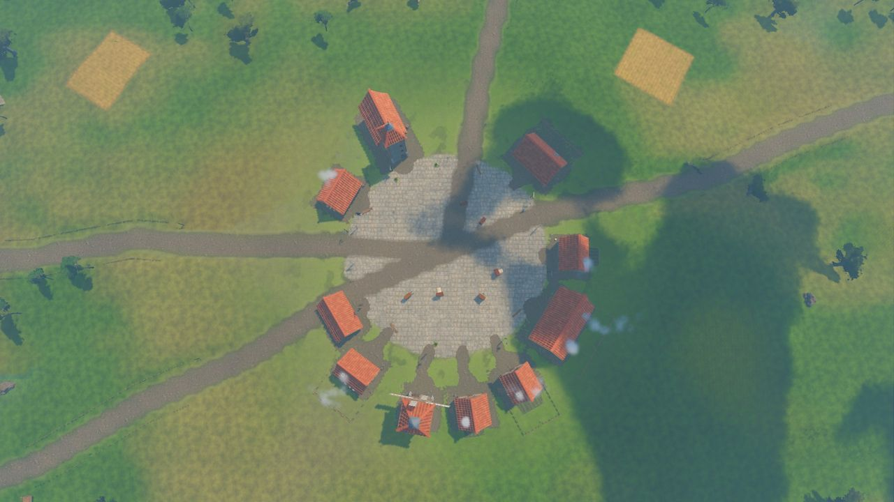

Releases
Release history
Aldervast is built one release at a time. Each one is tested, packaged for Windows and Linux with dedicated servers, and adds one thing to the game.
- 1.14.40The Measure, the story's twelfth chapter: yardwands staked an ell apart down the mountain to Highwatch, and the trail to the Lych Field, the Cloth Guild's old burial ground on the Saltreach downs, where Agnes Ellery, the guild's layer-out, is measuring the world for its winding-sheet; six quests for levels 56 to 58 and two side quests, the Tapes, the Fitted, the Layers-out and the Pinners, Wenna's eleventh vigil, the Winding House, a new group dungeon with the Lay Figure and Agnes, a choice to burn or fold the winding-sheet, two uniques and two achievements; packs near the start are level 1 or 2
- 1.14.39A fairer fight for a hero alone: from level 12 monsters hit more gently as they climb (about half by level 28) and have a quarter less life from level 22, heroes gain half a point of fire, cold and lightning resistance a level up to 25% at 50, monsters' burning, bleeding and poison run at half strength, no blow from a monster that is not a boss takes more than two fifths of your life, and vigils are sized to the heroes keeping them; rocky slopes, grass, the HUD, townsfolk, the first menu frame and the first trees all cost less, and monsters move and find their way more cheaply on the server
- 1.14.38The Shears, the story's eleventh chapter: someone has cut the warp at the Warp Pillars clean across at hand height, and the trail leads to the Cloth Guild's old Tenter Ground in the far south of Brightmeadow, where the Finishers are unhooking the Lattice's edge from thirty-one oak frames; six quests for levels 54 to 56 and two side quests, the Snips and the Finishers, Wenna's tenth vigil, the Cutting House, a new group dungeon under the guild's half-fallen finishing house with the Great Shears and Maud Kerf, the Cutter-off, a choice that leaves the Tenter Ground mended or folded, two uniques and two achievements
- 1.14.37Bug hunt XVII and a smoother start: the title keeps its town behind the veil until the graphics driver has built its shaders, so it no longer stutters, and the first load into the world waits the same way; performance reports say how much of a long frame was scripts and which shaders it waited for; monsters let go of anyone more than 70 metres away and go home; a magic or rare monster's experience counts its rarity once (a rare gave 36 times a common one) and bosses give a tenth of what they did, with more quest experience from level 1 to 32 to make up for it; raid boss frames name the fight begun last; the wagon's bandits leave with the wagon; and every hit, step and spell sound starts at once, more than halving what a hit costs the game
- 1.14.36Quests II, where to go: every goal of every quest has a place worked out by the game (the person where your story has put them, the hunting ground at about the quest's level, a dungeon's door, a spot or a stretch), shown on the minimap as gold patches, diamonds and rim arrows, on the world map as rings with the quest's name, and in the tracker and journal as the place and how far; everyone with a quest for you shows a “!” or “?” on both maps from afar; quest experience from level 1 to 32 now keeps a hero who does every quest up with the story (about three times as much in all); and up to level 20 open-world packs are two to four monsters, with rare leaders half as often, so the Saltreach's beaches are fairer
- 1.14.35Bug hunt XVI and a playtest at level: screenshots no longer freeze the game, the chat box sits over the life globe's crystal, and a dropped connection no longer fills the log with errors; the Hollow Crypt, the Rootdeep Warrens and the Trial of the Lattice are made for one (a pack to a room, smaller packs led by magic monsters at most, and bosses with 30% less life that hit 15% softer); a hero fighting a boss alone takes half of a shared blow and faces half the adds; the early game's easing runs to level 24 for monsters' life and 28 for their damage; Rootbound Shades do three quarters of the damage; and the later chapters' camps by early places sleep for heroes more than ten levels below them
- 1.14.34A version line and camps led by their own monster: once in the world, a small line in the top-left corner shows the game's version and where you are playing (Single Player, hosting on a port, or online at a server's address with the version that server runs, turning amber when the two differ); every story camp is now led by the monster it is named for, so the Warp-Weavers on the anchors, the Lantern Medusas, the Skein-Unpickers and the Turnweaver are always there for the quests that ask for them; and a phial's charge from a kill shows on the bar at once
- 1.14.33Quests I, every quest can be finished: a test hero now walks all 108 quests the way a player does, with no test commands; the Trial of the Lattice has its way in, the Sisters' Stair, an old stone tomb-mouth just outside the Nine Sisters, and the Group Finder's Dungeon queue tab has "Go to the Trial" (alone, at once, from level 10); a quest's own herb can be cut at any Herbalism skill, so Ithrael's Duskcap no longer needs Herbalism 8; Ysolde gives a first waystone with Beyond the Lattice Gate; the "!" and "?" over quest givers show the moment they come into view, and on the minimap; and online, a hero who fell while their connection was down gets the death screen when they come back instead of lying stuck at 0 health
- 1.14.32Bug hunt XV, raids and the story under random play: a raid boss's mark stays in its raid instead of going home with you (companions in later dungeons kept clear of a hero once marked), and the twin sirens' sister rises once and counts, so a raid can no longer end with a boss still standing; a party whose members all lose their connection at once holds while they are held, and a hero told to leave a raid that is no longer theirs is sent out even while their connection is down; handing in a quest with no choice in it keeps no choice; /dbg quest_ready works on a quest already ready and brings what a collect quest asks for; and new random-play tests of the raids and of the whole story, in which one hero handed in 64 quests
- 1.14.31Bug hunt XIV, a server that runs for days: a closed dungeon, battleground, raid or Hourglass run is let go of at once instead of staying in memory for good, an empty place no longer keeps the heroes who left it, and unanswered invitations and trade requests are let go of when they run out; one sigil can no longer set two Hourglass runs going; logins on a server are guarded (at most ten password checks a second, a second's wait after a wrong password and five wrong ones close the connection, twelve wrong from one address in ten minutes make it wait, five new accounts an hour from one address, a minute to log in), Single Player untouched; and the dedicated server's status line shows the heroes held, objects, memory and the longest tick of the last 30 seconds, an hourly health line goes into its log, and the log starts over past 20 MB, keeping server.1.log
- 1.14.30The debug console: the game's test commands can be typed in chat as /dbg (a level, gold, an item, a monster, a jump to a place or into a dungeon, a quest made ready, and more), with /dbg alone listing them and /dbg find looking up ids by name; an online hero's name at the end acts on them instead; they are always there in Single Player and for whoever hosts from the menu, and on a dedicated server only for its admins, an account with "admin": true in its file or one named with the new --admins=Name,Name launch option; and a test command's item no longer vanishes when the bags are full but lands at the hero's feet
- 1.14.29Single Player XV, a smoother start on a real PC: the graphics driver's cache is saved once, when the game closes, instead of every time it grows, which cost a frame of about 70 ms every 10 to 60 seconds and a run of them at the start; the download brings 403 shaders ready-made instead of 107, gathered from play at every quality setting, so far fewer are compiled while you play; a first launch on a four-thread PC no longer hangs about 7 seconds in, and reaches the title in about 2.5 seconds; and every launch writes a performance report of the start and the first minute of play (the newest five are kept; Settings, Graphics, Performance reports opens the folder)
- 1.14.28Single Player XIV, play starts clean: the Trial of the Lattice's quest is no longer finished just by stepping into the trial, only by completing it; everything in view when a loading screen lifts is built while it is still up, so the first frame of play no longer stalls (30 to 42 ms in town, 14 ms in a dungeon room); a pack of foes close by is built over several frames, nearest first, when building them all at once would not fit in one; the Great Hourglass's first sight takes about 3 ms instead of 8 to 11; and the first townsperson of a session no longer makes every figure redo its animations
- 1.14.27Single Player XIII, fewer hitches on the road: while playing on four cores or fewer, the plants hand the other cores one piece of work at a time, so the game's own thread no longer waits its turn behind the server and the plants (on more cores, under a loading screen and at the title it works as before, and the grass and far trees round a rider finish filling in a little later); a monster, townsperson or hero coming into view far off is built over two frames instead of one; and a loading screen's plants go first, so entering a zone still takes about a second. On the two-kilometre ride the frames over 8 ms went from 4 to 7 down to 0 to 4, and the worst frame from 9 to 15 ms down to 7 to 10
- 1.14.26Single Player XII, less work on the game's own thread: as each stretch of land comes into view, its trees, rocks, shrubs, ferns, fallen branches and flowers are made ready on other cores and set in place whole, the same ones in the same places; the pointer's spot on the ground is worked out only when it is used (a click, holding the button to walk, a skill aimed at a spot) instead of every frame; and the land's trees and plants are no longer kept in a second copy, about 12 MB less, so on the two-kilometre ride the slowest 1 in 100 frames went from 4.5 to 4.7 ms down to 4.2 to 4.4, and in a fight each frame's work is about a tenth less again
- 1.14.25Single Player XI, smoother on the road and in a fight: the sea cliffs along the coast road and the rubble under their outcrops are worked out on other cores as each stretch comes into view; the land's patches are looked over in about half the time as you travel; the marks over townsfolk come from an index of their quests instead of a pass over every quest after each kill; the water's light is set once instead of every frame; and picking out what is under the pointer passes over anything more than 80 m away, so on a ride of nearly two kilometres from town to town the long frames went from 15 to 3 to 5, and in a fight each frame's work is about a tenth less
- 1.14.24Single Player X, the menu appears without a stall: the menu's typefaces and music are read on other cores while the loading card is up, so the frame in which the menu appears went from 65 to 90 ms to 41 to 49 ms, and under 25 ms in some launches, with the menu appearing at the same moment; the weather's particles (rain, snow, ash, fireflies, leaves, embers, pollen) are made behind the menu in two halves, so the slow frame just after the menu appears is gone; and the downloadable build's self-test, run without a window, can no longer crash
- 1.14.23Single Player IX, the title screen's last slow frames: the world's map is read on another core from the moment the game starts; the monsters' warm-up and the plants growing round the town share one slice of a frame, and the models the warm-up uses are read from disk ahead of it; half the engine's worker threads now take reads from disk, so with the menu up the world builds without a frame of 35 ms or more and fades in at 1.4 to 1.5 s after the menu appears instead of 2.3 to 2.4 s; and the downloadable build's own self-test closes the way the game does, so it no longer risks hanging
- 1.14.22Single Player VIII, the title screen without its long frames: the skills' effects are warmed up behind the menu at most six a frame; the splashes, pools and feathers of a blow, the skin's fine pores and the clouds' shadows are drawn on other cores from launch; the ground's texture sheets are read on other cores while the rest is built; and the roadside, the landmarks and a town's props are made in smaller steps, so the longest frame between the menu appearing and the world fading in went from as much as 79 ms to 34; closing the game no longer risks hanging, since it now lets its worker threads' queue run dry before it quits; the 71 warnings in the log at every launch are gone, because the game learns the second pack's ids as it reads it in; and three plant models are no longer left behind when the game closes
- 1.14.21Single Player VII, two packs and the title screen's first frames: the game's data is split into two packs, the scanned trees and the dungeons' pieces now in aldervast_data2.pck beside the game's own (unpack both zip parts into the same folder), and the shaders are baked into the Linux build again as well as the Windows one; the clouds, the ground's mottling, the water's ripples and foam, the valley mist and the other noise textures are drawn on other cores from launch and once a session, so the menu's first frame no longer stops for a tenth of a second; Harrowford's yards are laid out a house at a time, so the longest frame between the menu appearing and the world fading in went from 90 to 97 ms down to 36 or 37; and using a crafting material on a stack of another material leaves the stack exactly as it was
- 1.14.20Single Player VI, a smooth title screen: the guild arms preview shows the field, division and device again, with a thin border at its rim; a long guild name in a window's title is made smaller and, if it still does not fit, cut short; the loading card and then the menu stand in the middle of the screen until the world fades in, when the menu glides to the left; the house between the title screen's camera and the middle of Harrowford stands whole instead of faded; the water, ash vents, roadside, models, townsfolk and effect textures are worked out on other cores from launch, and the ore rocks' nuggets are placed in 10 ms instead of 170, so between the menu appearing and the world fading in the frames of 25 ms or more went from about 25 to 8 or 9; and the shaders are baked into the Windows build, so a first launch on a new graphics card compiles 9 while playing instead of 85
- 1.14.19Single Player V, a title screen that loads fast and smooth: the game's name and “Loading” show 0.15 s after starting while the game is read on another core; the menu is up and usable at about 2 s while Harrowford is built behind it a piece a frame, the trees and grass grow in on every core and the first sights of monsters and spells are prepared one at a time; the world fades in whole at about 4 s, with no frame after that taking 25 ms or more; memory no longer grows by about 10 MB on each trip back to the title screen; pressing Delete twice on the character list opens only one question box; a launch trace (--launch-trace) writes how long each step of starting took; and the play-through test now crafts at the town's benches too
- 1.14.18Interface IX, sharp and even on every screen: windows always fit what they hold, so the talk window is one size and no longer runs the screen's height with tiny words; names, quest marks, speech bubbles and combat numbers are drawn at your screen's own resolution and stay sharp at 4K and on ultrawide screens; the interface is sized by the screen's height on every shape of screen (11% larger on 16:10 and 25% on 4:3); the smallest text is size 13; scroll bars are 8 pixels wide; the crest under each window's name is clean; quest rewards read as “Small Restoring Phial” and “3 Tinker's Shards”; the guide's card stands beside the talk window instead of behind it; and the banner across the top stays on a 4:3 screen at a large interface scale, all checked at nine window sizes from 1280x720 to 4K
- 1.14.17Single Player IV, the title screen and back: the title screen's world is ready sooner, as placing its trees and grass now starts first on the other cores (about 2.5 to 2.1 s on four cores, and starting the game to the title screen 6.3 to 5.7 s); Character select and Log out hand the game's world back to the title screen instead of building it again, so going back to the character list from far out in the country went from 1.5 to 0.8 s; and the play-through test went out and back in 122 times in 900 steps with no errors
- 1.14.16Single Player III, windows, quests and the pointer: the spot under the pointer is searched no further than 600 m over the sky and not worked out again while nothing moves (0.30 to 0.09 ms a frame with the pointer over the sky); monsters and townsfolk coming into view in a crowd keep to their share of the frame, and no frame in a three-minute walk through town took over 16 ms; the post and the group finder no longer leave pieces of the interface behind after the title screen; and the play-through test now shops, banks, posts letters and hands quests in, 900 steps with 113 trips out and back in coming back clean
- 1.14.15Single Player II, smoother play: in a three-minute walk through town, frames that stalled over 8 ms went from 22 to about 6, as townsfolk coming into view or falling no longer make every figure rebuild its animations; click-to-move no longer stalls a step (none over 4 ms in 300 clicks, from 62), as a long route is finished a little at a time and the colliders round the hero are worked out ahead; the picture goes on while the world takes a slow turn; after a trip to the title screen the light's colour keeps changing with the hour, weather and region; a hero sent into the dungeon they were already in is taken to its start; and a new play-through test plays Single Player at random through the real game, 900 steps with 129 trips out and back in coming back clean
- 1.14.14Single Player I, loading and stutter: Play from the title screen went from 4.4 to 1.5 s, as the title screen's view of Harrowford is now the world the game carries on with and the first sight of every monster and skill effect is prepared while it is up; back in from the character list went from 1.7 to 0.4 s, as the ground around your hero is worked out while the list is up; out of a dungeon went from 1.6 to 0.8 s, as the trees and grass round the door are kept; every core now helps place trees and grass; a long click-to-move route, the first step in a puddle and a crowd soaked by rain no longer stall a frame; a vigil's keeper who walks into a dungeon is told the vigil was left; and a new stress test plays vigils (timed on four cores; a desktop with more gains more)
- 1.14.13Bugs and performance: crafting a piece you are wearing rolls only properties you can meet, so worn gear never asks for more than you have (in your bags a piece still takes any its item level allows); every check of what stands in the way passes over far-off rocks and walls, about a third quicker each, so the server's work is 11% lighter in battlegrounds, 5% in raids and 2% in the open world; and new stress tests play companions and the wardrobe, and duels
- 1.14.12Bugs and performance: a glyph asks for the hero level its levelling took (2.6 levels for each glyph level), so one taken out always goes back in; right-click gear with glyphs in it, worn or in your bags, for Equip (or Take off) and Unsocket all; a glyph that needs a weapon, such as Arrow Squall and a crossbow, is dimmed on the bar and marked in red in its tip and the Skills window until you hold one; the Loose Thread's bar shows the Snarl's fall, and a thread come free counts for everyone shown it; sea chests riding the high water settle; a dungeon group no longer goes in with a party that has just changed; a party member whose connection dropped keeps their share of kills, loot, world bosses, vigils and events; a few things the server keeps for itself no longer go out to players; a new stress test plays the expedition events; and sending out to players is 14% lighter in battlegrounds and about 2% in the open world and raids
- 1.14.11Bugs and performance: a monster's route round a rock or wall stays on the server instead of going out to every player who sees it; a party member lying fallen by the Great Hourglass joins the run once on their feet instead of being carried in as they lay; a Loose Thread drawing tight tells everyone near its end or a knot and counts for them; a Loose Thread's or Warp Tear's bar goes a few seconds after you walk out of its reach; a battle's share shows in your purse, bags and honour at once; a new stress test plays each hero's game from what the server sends it, nine stress tests now check that the gold, bags, gear, phials, honour and journal on screen are what you really have, the server is restarted in the middle of play to check that nothing is lost, and the interface was checked at three screen sizes and every scale; and monsters nobody can see or reach are set aside until a hero comes near, so eight heroes in the open world went from 5.5 to 4.5 ms a tick
- 1.14.10Bugs and performance: coming back after a dropped connection tells you how your fishing line stands (in, still waiting, or a fish on, with the time left to strike) and closes or keeps a gathering or smelting bar as it should; casting a line stops a gather, and mounting up takes your line in and stops a gather; a trade request lasts two minutes and needs you near the one who asked; a hero can be in only one trade at a time, and a trade ends when the traders part, such as one going into a dungeon or by waypoint; a new stress test for fishing, gathering, cooking and the Saltreach Derby runs clean over 16,000 steps; and idle monsters 50 to 115 m from every hero look about for a foe only when one could be in reach, so eight heroes in the open world went from 5.8 to 5.0 ms a tick
- 1.14.9Bugs and performance: a guild member removed while away loses the tag and arms at once, and a guild's new arms reach members who are away; coming back after a dropped connection tells you how your guild, party, letters, friends and the derby stand; a leader can remove an away member, and the lead passes on while the leader is away; letter counts rise and fall as they should; a dropped connection no longer leaves a hero fishing or gathering for good, costs a derby angler their prize, or ends Wila's wagon or a vigil at once; the guild vault closes at the character list; ignore takes only real heroes, a hundred at most; friends show as they write their names; guild invitations last two minutes; a new stress test for guilds, parties, friends and the post runs clean; and monsters more than about 115 m from every hero stand still until one comes their way, so eight heroes in the open world went from 5.9 to 5.1 ms a tick and a raid of ten from 3.2 to 2.9 ms
- 1.14.8Bugs and performance: queuing a party for a battleground takes its members out of any place they held alone, and a leader can't queue the party while one of them is in a battle; a relic carrier who leaves the battle drops the relic where they stood, at once; a hero whose connection dropped just before a battle ended gets their share; a new stress test runs six heroes through the battlegrounds and runs clean; and the server works out only the creatures a hero can see, so eight heroes in the open world went from 6.5 to 5.9 ms a tick and four battlegrounds from 3.6 to 3.4 ms
- 1.14.7Bugs and performance: a fallen hero who levels up while down stays down with no life until they get up; the result of an Hourglass run kept for its keeper survives a server restart, and every run's name is its own; a duel ended by a dropped connection clears both sides' poisons, burns and chills, names the one who left and counts the loss; the duellist who strikes the last blow wins it even if the other's connection drops; a hero whose connection dropped a moment before their party finished gets their share; a new stress test runs heroes against the world bosses and runs clean; and monsters wandering about their spots cost less (a step takes 5 microseconds rather than 7.5), so four heroes in dungeons went from 4.9 to 4.2 ms a tick and a raid of ten from 3.4 to 3.1 ms
- 1.14.6Bugs and performance: turning the next Hourglass run brings anyone still inside the last one out first, and tells them why; a battleground that ends or empties sends home anyone whose connection had dropped in it; coming back to a place that closed while you were away puts you outside, where you went in; a waystone's effects hold on a hero whose connection dropped in an expedition; a new stress test runs heroes through the endgame and a new tool presses everything in every window, both clean; and the server spends less on telling each hero what they can see, so a raid of ten is about 14% cheaper (3.8 to 3.3 ms a tick in the Spire of the Sundered Crown, 3.2 to 2.8 ms in the Drowned Basilica)
- 1.14.5Bugs and performance: glyphs have to come out before a Ruin Shard can reshape a piece's sockets, so none are lost; gear you are wearing has to come off before it is salvaged, and a quiver comes off with its crossbow; an aura comes down when its glyph is taken out or its piece comes off; an opened letter and a new Exchange collection box are saved at once; new stress tests for crafting and skills, with the server stopped and started now and then, run clean; and battleground bots re-check their route a few times a second instead of every tick, taking the server's work with four battlegrounds open from 7.7 to 3.9 ms in the Shattered Hall and from 12.7 to 5.0 ms in the Sunken Reliquary
- 1.14.4Bugs and performance: a hero who lost their connection no longer keeps a Defender or Healer mark after their party breaks up; a ready check falls through if the party changed after it queued, and everyone else goes back to the front of the queue; a dropped quest item can only be picked up while a quest still wants it; new stress tests run thousands of random steps through parties and quests and now run clean; a dungeon nobody is in stands still until someone comes back (six empty dungeons had tripled the server's work, 6.5 to 19.5 ms a tick, now 7.0 ms); and monsters ambling in a dungeon check the walls once per amble, taking a busy tick from 12.4 to 9.9 ms
- 1.14.3Bugs and performance: the interface scale changes when you let go of the slider, and at the largest scales windows too big for the screen are drawn smaller to fit, open in front of the globes, and the phials, skill bar and level plate fit between the globes; Reduce flashing, Colour-blind mode (protanopia, deuteranopia, tritanopia) and High-contrast markers now work; leaving a party inside its dungeon sends you out after 30 seconds, and only living party members share a kill; a quiver comes off with its crossbow; Exchange listings are cancelled at the auctioneer; a deleted character's letters go back to their senders at once; a new test that moves gold and goods about at random found nothing duplicated or lost in 26,500 steps; and the server does about a third less work each tick, with far townsfolk animated every third frame
- 1.14.2Item tooltips: a piece of gear's tooltip is a card in the game's glass and silver, its numbers in rows beside small icons, its sockets as coloured jewels (faceted where filled, linked by bars), a requirements row with anything you lack in red, the implicit and affixes between fine rules with each affix's tier dimmed after it, a comparison panel with an arrow up or down, and a footer with what each mouse button does and the merchant's price; added damage reads as one line, such as “Adds 1 to 3 Fire Damage”
- 1.14.1Bug-hunting sprint, 50 fixes: the merchant's window shows your own gold and a tooltip gives each piece's sale price; items that don't fit in full bags fall at your feet with a message instead of vanishing, and stacks fill before a new slot is taken; glyphs come back when a piece is sold or salvaged; bound items and sigils can't be traded, posted, dropped or listed on the Exchange, whose search now finds the cheapest of every match; riding and wagon horses keep their legs moving, and a two-handed hero no longer freezes when standing; you dismount at a dungeon or battleground door and are thrown from the saddle if you fall; monsters must see you to cast their abilities; the fallen can't loot, trade or craft until they get up; a fallen hero wakes at the nearest waypoint found, as the tips now say; and fixes to parties, guilds, travel, names and hints
- 1.14.0World VI, deep winter: the Frostspire's snow lies in long wind drifts with fine ripples and crystals that glint as you move; breath steams in the cold for heroes, townsfolk, monsters and horses, though not for the dead, the frost-woven or creatures of stone and snow; the Carded's fleece is a cooler blue-grey with lilac creases and the Spindle's Foot is wider and brighter; and the Carded and the frost-woven shed frost and powder snow when struck instead of blood
- 1.13.0The Crown Spindle, story chapter ten for levels 52 to 54 in the Frostspire: the line of light from the Spire's broken crown runs into the glacier at the Spindle's Foot; the Carded, drifts of snow combed into fleece, and the Crown Carders and Spinners, the King's Spinster's frost-woven maids; the ninth vigil; the Frozen Spinnery, a group dungeon walled in glacier ice, with the Rolag and Gyda Thrum, the King's Spinster; a choice to let her spin or still the spindle, with two uniques, two side quests and two achievements
- 1.12.0World V, the ash lands: Cinderreach's cooled lava is a crust broken into plates, each crack at its own heat from cold black to white-gold; over a hundred vents smoke in the lava fields round glowing throats; the embers are small sparks that cool as they rise; and the lava no longer glows through the grass where the turf meets the ash
- 1.11.0The Far Side, story chapter nine for levels 50 to 52: mirror-writing on the Lattice Gate's footing stones from Aubrel Corrow, the first Gatewarden; the Drawn walking in over the ash along glowing tracks, and the Gone-Through, the first watch woven into cloth, gleaning round the Gate; the eighth vigil; the Far Side, a group dungeon whose windows look out on impossible places, with the Treadle at her wheel and the First Gatewarden at his loom; a choice of two uniques, two side quests and two achievements
- 1.10.0Heroes II: feet find the ground on slopes, the hips sinking, the knees bending and each planted foot tipping along the hillside; eyes that blink every few seconds and glance about; long hair that swings on a spring, trailing behind a runner and lifting in the wind; and a man's long hair now sits on his head, with no crown showing through it
- 1.9.0The Looking Side, story chapter eight for levels 48 to 50: forty silver reflections walk out of Frostmere over the pass to the Lattice Gate and weave a silver twin of it, the Looking Arch; the Silver Track over the pass; silvered wolves, harts and watchmen and the turnweavers; the seventh vigil; the Looking Side, a group dungeon in a silvered kit of its own, with the Looking Hart and Tebasli, the Looking-Glass, at her loom; a choice of two uniques, two side quests and two achievements; and quest words that follow how the seventh chapter ended
- 1.8.0Lived-in towns II: fenced plots with their gates standing open behind most houses and farms; farmyards scratched and trodden bare behind the farmhouses, barns and stables, with carts standing in them; and hens in six colours pecking about the plots, each walking her own little round
- 1.7.1Performance, with the same pictures: the ground's shading reads only the layers that show where it is drawn and takes its slope from one map, so a frame draws in about half the time on the software renderer it was measured on; in Single Player the world runs on its own thread beside the frame; gulls and other birds keep their lighter models at a distance; the game's own work each frame fell by about 30% on a minute's walk; and quitting no longer crashes while a background job is still running
- 1.7.0World IV: big heaps of cumulus with billowing sunlit faces and shaded bellies; violet asters and buttercups through the meadows in little groups; grass lit through and glowing at its tips against a low sun; a fuller day grade with cool shadows and warm highlights; and the Spire of the Sundered Crown on the skyline, nine spires of ice glowing from within behind the raid's gate in the Frostspire, seen through the haze from the meadows and brighter at night
- 1.6.0The Other Boat, story chapter seven: the first Weavers built two glass boats, and the second lies sunk in Frostmere, where after dark reflections in the mere's silver walk out of the still water. Six quests and two side quests for levels 46 to 48; the glasspike, its fry and the Shuttle; the sixth vigil, singing the drowned boat up; the Underweave, a dungeon on the wrong side of the world's weave, with the Shuttle, Ilsabet, the Backweaver, and her Reflection; and a choice at the end between two uniques
- 1.5.5Bugs and performance: the gear each class starts with asks for nothing, so a weapon taken off can go back on (older characters are fixed when they log in); thralls and other human foes fall when they die and their bodies fade; a quest's unique is never above your level and smiths stock gear within three levels of yours; the world and the client do less work each frame, so on a minute's walk the worst stall fell from 26 to 15 ms and dropped frames from three to none; and a new Auto frame cap, in step with the screen, and a 15 fps limit while the game is in the background save power
- 1.5.4Interface VIII: the HUD, the Encounter Journal and every window's frame are cut straight from the painted design of the screen (the globes and their painted liquid, the flask slots, the nine-slot skill bar with its crystal wings, the experience rail and level plate, the minimap's ring, the zone plate, the side buttons and the quest tracker's emblems), so they match it within a pixel or two; every other window wears the journal's frame, and the painted minimap is tinted to the design's olive green
- 1.5.3Interface VII: glass bosses in the journal are cut crystal, the spider's legs long prisms, on a polished stone stage over their reflection under a shaft of rainbow-edged light; windows of layered glass with painterly clouds and a pool of light under a crest of cut gems; the minimap a painted map of the whole overworld in a ring of steel and gold; every player skill and journal ability icon a small 3D scene rendered for it; skill slots in rims of steel and gold; a rebuilt citadel under the journal's list; the journal set in Alegreya; role pills that say who an ability is for; and thicker globe blades and rounder flasks
- 1.5.2Interface VI: every window's rim is a slab of cut crystal whose facets slant across it, with the world bent through it; the journal's preview stands in a dark gothic hall with lancet windows and a mirror floor, the glass spider a deeper ice blue; the skill bar has rounded ends capped with crystal, dark recessed slots in a silver bevel, rounded key badges and sharper skill icons; the globes' blades are blue cut glass edged in gold; a deeper experience groove, a fainter quest tracker shade with bold gold names, a richer minimap and journal headings; and a fuller, warmer colour grade by day and at golden hour
- 1.5.1Interface V details: round glass flasks with gold collars in the phial slots (red for life, blue for mana, rose and violet for the lattice phials), filled to the charges left; broader, heavier silver claws on the globes and a window of light across their glass; a crystal citadel at the foot of the journal's list; and glass bosses in the journal's preview shown as cut crystal, with a flash of sun, glowing facet seams and a prism shimmer
- 1.5.0Interface V: the Encounter Journal and the HUD laid out to a painted design of the whole screen and checked against it crop by crop: the boss's page with its name in large gold capitals, round glossy ability icons and role pills; the preview under a gold arch, the glass boss bending its hall; the place's card in gold-lined glass; a glowing gold pill for the picked place; teal-navy glass windows; crystal stars at the ends of the nine-slot skill bar; the quest tracker on a glass shade with gold medallions; a painted map in the minimap; and the wings of the zone's plate drawn at last
- 1.4.0Lived-in towns: every house stands in a yard, with a woodpile of split logs under the eaves and a chopping block beside it, a bench by the door, barrels, buckets, crates and stools at the corners, and washing on a line that bellies and flutters in the wind; kitchen gardens of young greens behind houses, farmhouses and lodges, edged with planks; chimney smoke fainter at the mouth
- 1.3.0World III: the mountains read as weathered rock from afar, with bands across their steep faces, streaks down them and a true grey granite on the peaks; each snowy fir wears as much snow as the ground it stands on, so far slopes of firs read dark green under white instead of white puffs; under the forest canopy the grass grows in patches where the light comes down, with bigger fern clumps and more litter; chimney smoke rises in soft, pale columns
- 1.2.0Unravelling: once the Selvage is done, about one expedition in five holds a Loose Thread. Pull it and it runs out through the halls to three to five knots on a 48-second clock; woven things come out of each knot to hold it, and each knot cut buys 20 seconds. Cut them all to free the end with Hem Thread, a new currency that rerolls a rare item but keeps its best property, and at high tiers the Snarl rises; run out of time and the thread draws tight. Two atlas passives and five achievements
- 1.1.0The Selvage, the story's sixth chapter: six quests and two side quests for levels 44 to 46 after the Tideloom. A boat of sea glass washes up on the Saltreach shore on a glowing thread, the Lattice Gate draws its weave in, the old hem stakes are driven back, and Wenna wakes the boat in a fifth vigil. The new Selvage dungeon (level 45, floored with woven cords) holds Hesper, the Last Ferrywoman, and the Ravel, and ends on a choice of two uniques. New woven creatures: hemwraiths, unpickers and ravellings; achievements The Selvage and Keeper of the Crossing
- 1.0.0Dungeon dressing: dirt gathers along the foot of every wall and each theme lays its own ground (dust, moss, damp, standing water, soot, passages worn smooth); the things each place would hold lie along the walls and in the corners (bones, candles, urns, roots, mushrooms, coal, books, ice, shells, rags, crystals); cobwebs, shafts of light through the roof, worn runners down five themes' boss halls, and low mist over the damp places' floors
- 0.99.0Monsters II, blows that land: every creature flashes in the blow's colour, beasts and critters are knocked back and settle, and a physical blow throws out what the body is made of (blood, ichor, gel, embers, stone chips, sap, spores and more) to splash the ground, with a pool under a body that falls. Weapons strike sparks only from stone, glass and crystal. The Meadow Boar was rebuilt and the tree folk stand on roots. Fixed: a Tide Bell's drifters no longer come in inside the rock when a hero stands by a wall
- 0.98.0Interface IV: the window ornaments are now rendered in Blender, with a glinting ice-glass band between gold lines, crystal clusters at the corners and a crest over a pointed title plate, and the text is set in a book serif. In the Encounter Journal every place has its own picture in its row, the picked row glows gold, the headings have gold emblems, the boss turns in a crystal hall at night, and each ability has a painted icon and painted Damage and Heal tags. The globes sit in slim silver rings with ice blades, the skill bar ends in ice-blade wings with each key on a pill, and the phials show their charges
- 0.97.0World II, the land: towns are worn by their people, with bare earth along the walls, trodden patches at the doors and footpaths out to the square. Millbrook Farms and Harrowford have fields of ripe wheat, young shoots and ploughed furrows; meadow trees grow in copses and the forests open into glades. The roads have milestones, signposts, fences, wagons and log stacks, and the mountain snow lies in wind-carved drifts with grey slush on the roads
- 0.96.0Interface III: every window is now dark navy glass the world shows through, in a silver frame with gold filigree, ice-blue crystal shards and a crystal crest over the title, and tooltips, cards, buttons and slots match. The Encounter Journal is laid out in three columns: the places, the boss on its stage over the place's card, and the boss's story and abilities by role. The skill bar sits between silver wings over a slim experience bar, the potions have their own plate, the globes have silver claws, the minimap has a silver and gold ring with glass buttons, and the quest tracker marks each quest with a crystal diamond
- 0.95.0Interface II: the life and mana globes are now liquid in a glass sphere set in carved rings, with a slow swirl, a surface that sloshes when a hit lands, a pale ghost of the life just lost draining away and a heartbeat at low life. Potions and skills share one carved belt, buffs and ailments are lit tiles with a drawn glyph and a clock sweep, and the target, party and raid frames have new life bars. Item tooltips have a header band in the rarity's colour, the chat fades when nobody is using it, and every window has a drawn close button
- 0.94.1Early-game rebalance: young monsters have 60% of their life and half their damage at level 1, easing to the full figures by level 16 (life) and level 20 (damage). The packs round Harrowford are level 1 or 2, and open-world packs up to level 4 are two or three monsters with no rare leader. Out of combat a hero regains a tenth of their life and mana every second, every hero has 20 more life, and a hero who falls rises with full phials
- 0.94.0New-player onboarding: a twelve-step guide card walks a new character through moving, the camera, the first quest, fighting, skills, loot, gear and potions, with a gold arrow over whoever each step is about, the part of the screen it names lit up and the player's own keys shown. One-time tips explain each bigger system the first time it turns up, and How to play (F1) explains the game topic by topic and can restart the guide. Fixed: a hero no longer rises from a fall still in the death pose
- 0.93.0Skill and spell effects, the second visuals release: effects are now built in layers. Fireballs cool into lit smoke with flames and glowing cracks in the ground, frost hangs in a haze, lightning crackles, slams send out torn-edged shockwave rings, swings leave streaked swooshes and bolts fly with flame-lit heads and comet trails. Burning, chilled and shocked ground have surfaces of their own. The effect textures are generated in-house
- 0.92.0Visuals push I, the heroes: every human now moves on a layered animation tree. A walk blends into a jog or a sprint without a skipped step, weapons stay in hand at a run, attacks play on the upper body while the legs keep running, every blow makes a figure flinch, bodies lean into turns and townsfolk turn their heads to a passing hero. Skin, hair, brows, eyes and cloth are relit
- 0.91.0Tidewrack, an endgame mechanic after the Undertow: about one expedition in five holds a Tide Bell, and ringing it floods every floor of the map knee deep for under a minute. Heroes wade, medusae drift in on the tide, four to six barnacled sea chests surface and sink again unopened, and the Bloom Mother rises at the bell at high water. Sea Glass, a new currency, sets a tidemark on a waystone for a bell for certain; two atlas passives and five achievements come with it
- 0.90.0The Tideloom, the story's fifth chapter for levels 42 to 44, on the Saltreach coast: medusae drawn in to the Greywatch Light and its keeper Orla Penwarden, four fouled nets to cut free, and Wenna defended through three waves while she weaves a wick from the warp; then the Undertow, a sea cave of glowing tide pools beneath the headland, where Old Hallam keeps the Light's lost lantern and the Tideloom spins at its pool. A choice at the end gives one of two uniques. The medusae are a new creature in three looks; two side quests and two achievements come with it
- 0.89.0Warp Tears: after the Loomwright, about one expedition in five holds a tear. Touch it and a ring spreads where glass creatures come through, the Unspun among them; each kill buys the tear more time, and at 45 kills the Knot-Keeper arrives. Closing drops Warp Thread, a new currency that Wenna Coldspindle weaves into gear from a new Weave tab, with 13 woven properties. A tear bar, two atlas passives and five achievements come with it
- 0.88.0The Loomwright, the story's fourth chapter for levels 40 to 42, in the Frostspire: the Lattice's oldest threads pulled north to the Warp Pillars, kept by Tavish Rime; glass spiders on the snowfield, three anchor stones to tie back and Wenna's re-weaving held through three waves; and the Hall of the Warp beneath the Pillars, where Vessrin, the Glass Brood-Queen, and the Loomwright, the glass giant who wove the Lattice, wait. A choice at the end gives one of two uniques. The glass spiders are a new creature in three sizes, drawn with a new glass shader; two side quests and two achievements come with it
- 0.87.0The Waking: three level-40 world bosses that wake in turn each hour, each in a lair of its own: Old Carapace, the Wreck-Bearer, on the Broken Shoals, Vorgrath, the Cinder Colossus, in the Cinder Crater, and Elderhorn, the Moss Stag, in the Antlered Glade. Each fights with raid mechanics and scales to whoever comes; everyone who fights shares the credit, and once a week each gives spoils with a chance at one of six new uniques. The Encounter Journal has a World Bosses page and the map shows when each lair wakes. Fixes: Heartsilk now gives +60 Ward, banners no longer print over notices, and dense forests no longer run out of GPU room for their trees
- 0.86.0The Pale Moth, the story's third chapter for levels 37 to 40: moths eating the Lattice round the Heartroot, the Silkbound and their cocoons, Wenna's mending held through three waves, and the Moth-Eaten Loom beneath the Heartroot, where Aldreth Silkhand the Unspinner and the Pale Moth wait. A choice at the end gives one of two uniques. People in the world now move with a hero's story
- 0.85.0Hourglass runs: timed runs of the five story dungeons from the Great Hourglass on Harrowford's square, where Ysolde Marrowglass the Horologist hands out sigils. A sigil opens its dungeon at its tier under the week's three omens; beating the par raises it one to three tiers and running slow drops it. Best runs add up to a rating, each dungeon keeps a board of its ten fastest runs, and a weekly coffer holds a reward. Companions now speak in proper speech bubbles
- 0.84.0The Last Lantern, the story's second chapter: seven quests from the Lattice Gate back to the Nine Sisters, a vigil at the altar stone through three waves of the Hollow, Weaver Wenna at the Shrine of the Quiet Frost, and the Vault of the Last Lantern beneath the Glass Scar, where Ser Caddoc the Wick-Knight and Ilgrim the last Lamplighter wait. A choice at the end gives one of two uniques; two side quests and two achievements come with it
- 0.83.0The Spire reforged: the Spire of the Sundered Crown's three bosses fight on the raid rules the Basilica brought, with personal loot of six level-30 tier sets and four uniques, and looks of their own for the Sundered King, Choir-Mother Vesh and Warden Ossric
- 0.82.0Boss looks: Sexton Mordaunt, Captain Vane, Slagmaster Krag, the Twin Sirens, Archdeacon Thessaly and Old Gnarltooth each wear a look made for them, with their own hats, fins, barnacles, slag and weapons
- 0.81.0Passive art: a painted emblem on every node of the passive web, with one of its own for each keystone, notable and class start; and a raid boss's healing adds now always start inside its room
- 0.80.0Story dungeons: a layout of its own for each of the four dungeons, a mini-boss under its own set piece on the way to each last boss, a group mechanic for every boss, and the dungeons in the Encounter Journal
- 0.79.0Raids II: the Drowned Basilica, a level-40 raid for up to ten with four encounters, spread and stack marks, wards to break, berserk timers, an Encounter Journal, weekly lockouts, personal loot and a tier set for each class
- 0.78.0Light and atmosphere: the sky and the world lit from one model of the air, golden evenings, red sunsets and a blue twilight, clouds lit along the sun, a colour grade that follows the hour, weather and region, sunbeams through trees and roofs, and dawn mist in hollows and over still water
- 0.77.0Grass and foliage: one set of greens from the blades to the turf with no fade line, grass that reaches further, drifts of six kinds of wildflower, reeds and cattails along the water, and grass that parts as you walk through it
- 0.76.0Interface: carved iron-and-gold window frames with title plates, buttons that warm on hover and sink when pressed, tooltips tinted toward rarity that fade in, cards for skills, passive nodes and quests, quieter nameplates and smooth snow at Highwatch
- 0.75.0Landscape: grass dried toward straw on ridges and sunny slopes and lush in hollows and by water, stones and scree on steep slopes, broken rock below outcrops, boulders seated into the slope, and snowy firs with dark boughs
- 0.74.0Visuals III: surf on the sea, clear shallows with caustics, lakes with coves and points, rivers in their beds between curving banks, a mossier forest floor and cleaner snow
- 0.73.0Endgame map variety: six expedition layouts, cave and frost kits, burning, chilled, shocked and desecrated ground, a fight of its own for each expedition boss, and cone warnings drawn where they hit
- 0.72.0Visuals II: natural meadow grass, marram on the coast, dark ash with glowing lava cracks, granite peaks, lit lanterns, painted icons for all 49 skills and a jewelled passive web
- 0.71.0Bait, lures and the Saltreach Derby: fish weights and records, Hesk's Prize Rod, a fishing contest off Gullhaven every half hour, new fish models and 24 HD icons
- 0.70.0Better tools and tracking: smith-forged picks, sickles and a flaying knife, and Find Herbs and Find Minerals on the minimap
- 0.69.0Skinning and smelting: leather and region hides from beasts, bars smelted at the smithy anvil, and smiths forging from bars and stitching hide armour
- 0.68.0Visuals I: item icons rendered from the game's 3D models, new tooltips and window frames, moonlit nights and an anti-aliasing setting
- 0.67.0Herbalism and mining
- 0.66.0Fishing and cooking
- 0.65.0The Sunken Reliquary, a relic battleground
- 0.64.0The Wardrobe: restyle worn gear as any collected look, hide armour, outfits, Outfitters in Harrowford and Gullhaven
- 0.63.0Honour and the Battlemaster, level brackets, a call to battle
- 0.62.0Battlegrounds: The Shattered Hall, five a side, three hearthstones, bots in the empty places
- 0.61.0Companions for dungeon groups
- 0.60.0Roles and the dungeon queue
- 0.59.0Wila's wagon
- 0.58.0Riding a real horse
- 0.57.0A group finder
- 0.56.0Duels
- 0.55.0The post
- 0.54.0Guild halls and pennants
- 0.53.0A guild vault
- 0.52.0Gulls on the roofs and the shore
- 0.51.0Cloud shadows
- 0.50.0Birds in the sky
- 0.49.0Towns you can hear
- 0.48.0Banners and cloaks in the wind
- 0.47.0Each place's own sound
- 0.46.0Lit rooms behind open doors, door light on the street, rain dripping off the eaves
- 0.45.0Wind and weather sound
- 0.44.0Set pieces for the raid's mini-boss rooms
- 0.43.0Doors that open, shutters that close at night
- 0.42.0Lightning sets trees alight, puddles ripple and splash under footsteps
- 0.41.0Lightning strikes the ground, footprints in mud and wet sand
- 0.40.0Boss rooms that wake with their boss, footprints in snow
- 0.39.0Settling snow, wet figures in the rain
- 0.38.0Carved totems, minions that fade in ghost-fire, footprints along the route to a click
- 0.37.0Chimney smoke in every town, storms with lightning and thunder
- 0.36.0Nameplates that stack in a crowd, lit windows at night, wet towns
- 0.35.0World placement on worker threads, rain that lands and soaks the ground
- 0.34.0Tabards in faction and guild heraldry, BPTC packed maps
- 0.33.0No hitch when anything first comes into view
- 0.32.0Belts on the character, no hitch when figures come into view
- 0.31.0Walking round obstacles
- 0.30.0Bosses that wake from their set pieces
- 0.29.0Smoother streaming into new ground
- 0.28.0Cloaks that swing on turns
- 0.27.0Robes that part in a stride, half-size impostor normal sheet
- 0.26.0Distant-tree impostors, far forests, stepped streaming
- 0.25.0Shoulder shapes per item
- 0.24.0Boss-room set pieces
- 0.23.0Cloaks
- 0.22.0Armour variety
- 0.21.0Movement skill effects
- 0.20.0Signature effects for the support skills
- 0.19.0Calathrax, the Elder Wyrm
- 0.18.0The Void Angler, a deep-sea anglerfish boss
- 0.17.0Magma and crystal oozes
- 0.16.0Realistic birds, crab and wasp
- 0.15.0Realistic beasts
- 0.14.0Realistic creature monsters
- 0.13.0Dungeon atmosphere
- 0.12.0Realistic undead and spectres
- 0.11.0Dungeon doorways and boss braziers
- 0.10.0Realistic dungeon interiors
- 0.9.0Gates and the hidden places
- 0.8.0The Saltreach coast and landmarks
- 0.7.0Scanned trees
- 0.6.0Armour and forest floors
- 0.5.0War camp, terrain fixes and photoscanned rock outcrops
- 0.2.0Graphics settings that tune themselves on first play; borderless fullscreen by default
- 0.1.0The first playable build: the island, six classes, quests, dungeons, and Single Player, Host and Join